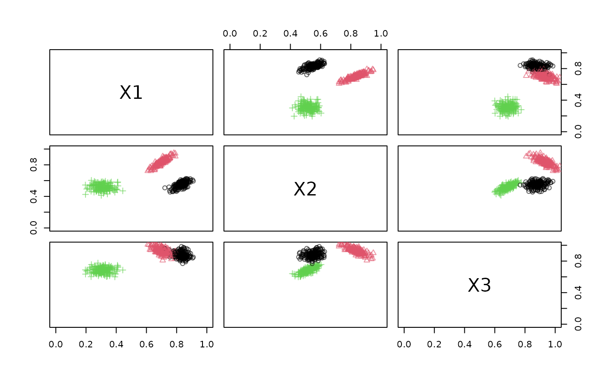
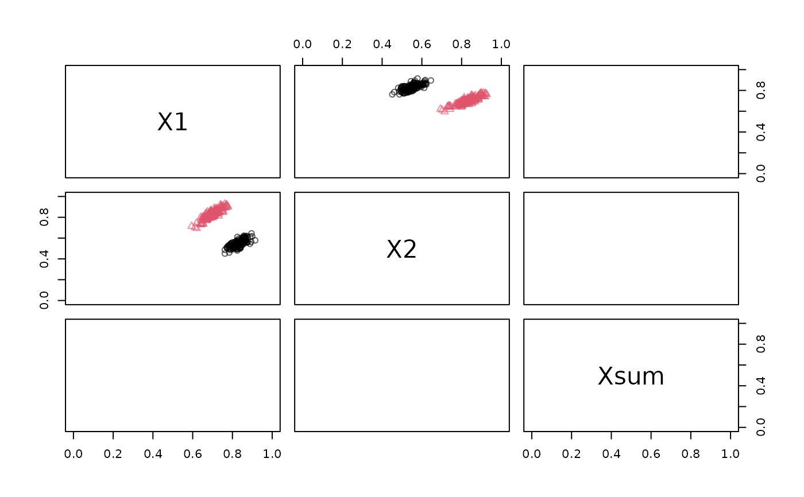

Applies dplyr transformations to a data stream.
Arguments
- dsd
An object of class DSD.
- func
A dplyr expression.
- info
Logical; should the function also receive and modify the information columns?
Details
dplyr needs to be installed and loaded with library(dplyr) before DSF_dplyr can be used.
Since streams are processed one point or block at a time, only dplyr::dplyr operations that work on individual rows are allowed on streams. Examples are:
Summary functions can be used, but will only be applied to the requested part of the stream of length n.
DSF_dplyr() calls the function using points %>% <func> and multiple dplyr functions can be applied by
using %>% between them.
Examples
library(dplyr)
#>
#> Attaching package: ‘dplyr’
#> The following objects are masked from ‘package:stats’:
#>
#> filter, lag
#> The following objects are masked from ‘package:base’:
#>
#> intersect, setdiff, setequal, union
stream <- DSD_Gaussians(k = 3, d = 3)
plot(stream, xlim = c(0, 1), ylim = c(0, 1))

# 1. Select only columns X1 and X2
# 2. filter points by X1 > .5 (Note that the info columns also need to be filtered!)
# 3. Add a sum columns
stream2 <- stream %>%
DSF_dplyr(select(X1, X2)) %>%
DSF_dplyr(filter(X1 > .5), info = TRUE) %>%
DSF_dplyr(mutate(Xsum = X1 + X2))
stream2
#> Gaussian Mixture (d = 3, k = 3)
#> + function: select(X1, X2)
#> + function: filter(X1 > 0.5)
#> + function: mutate(Xsum = X1 + X2)
#> Class: DSF_dplyr, DSF, DSD_R, DSD
# Note: you get fewer points because of the filter operation.
get_points(stream2, n = 10)
#> X1 X2 Xsum .class
#> 1 0.7732225 0.5148554 1.288078 1
#> 2 0.7063570 0.8405987 1.546956 2
#> 3 0.7884811 0.5241376 1.312619 1
#> 4 0.6774322 0.8247475 1.502180 2
#> 5 0.7319200 0.8951985 1.627118 2
#> 6 0.8573617 0.5984794 1.455841 1
plot(stream2, xlim = c(0, 1), ylim = c(0, 1))
